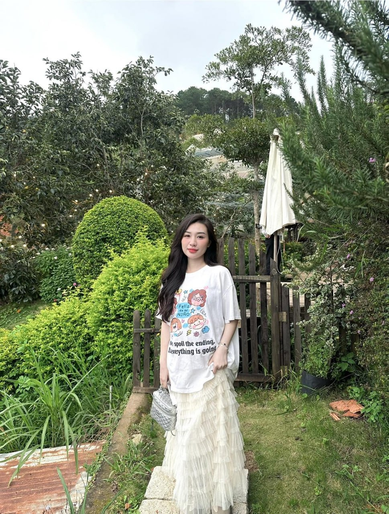
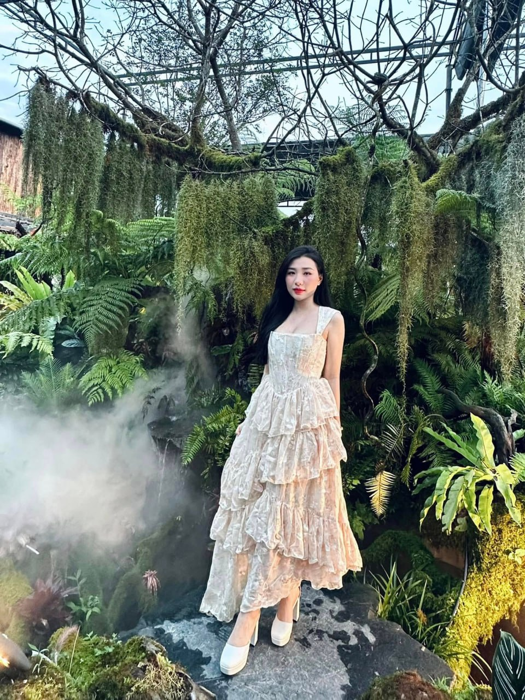

Tân Hòa, Tân Hiệp, Kiên Giang
Securities Support Specialist – WAREHAM GROUP. Graduated from Banking University of Ho Chi Minh City, majoring in Finance. Currently living and working in Ho Chi Minh City.
I am very happy to share my story with you! If you are a gentleman who appreciates life's pleasures, I would like to be friends with you.
I am Lê Ngọc Khánh Ly, born on December 10, 1996 in Kien Giang. I was born and raised in Tan Hoa, Tan Hiep district, Kien Giang in a family environment that values effort, self-reliance, and responsibility in work.
Since my school days, I have always been conscious of building discipline, communication skills, and a learning spirit. Besides completing my studies, I also took an interest in economics, finance, and personal capital management.
After completing the program at Banking University of Ho Chi Minh City, with a focus on Finance – Banking, majoring in Finance, I decided to enter the practical working environment in Ho Chi Minh City. This period helped me gain more experience, improve communication and customer service skills, and gradually clarify my career development path.


I used to think that being a single mother would make the road ahead much more difficult.
But over time, I realized that the responsibility for my child has helped me grow more.
I learned to solve problems on my own, to get up after failures, and most importantly, to understand that I have no right to give up when there is someone behind me who needs me to keep trying.
I am not building a career just for myself.
I want my child to look back later and understand that:
“Mom once had a very hard time, but she never stopped trying.”
That is also why I take the path of finance – securities seriously and keep learning every day.
In the future, I hope to continue developing professionally, accumulating experience, and building the image of a professional, responsible, and dedicated securities support specialist.
I believe that success does not come from never having failed.
Success comes from being strong enough to stand up and move forward after each failure.
I look forward to sharing and chatting with you.